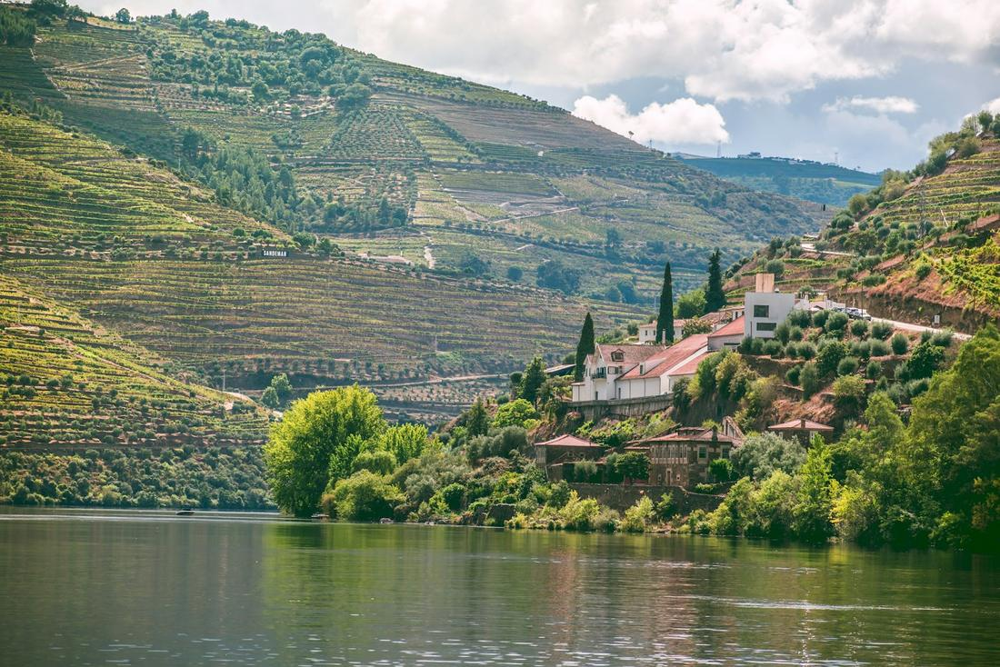
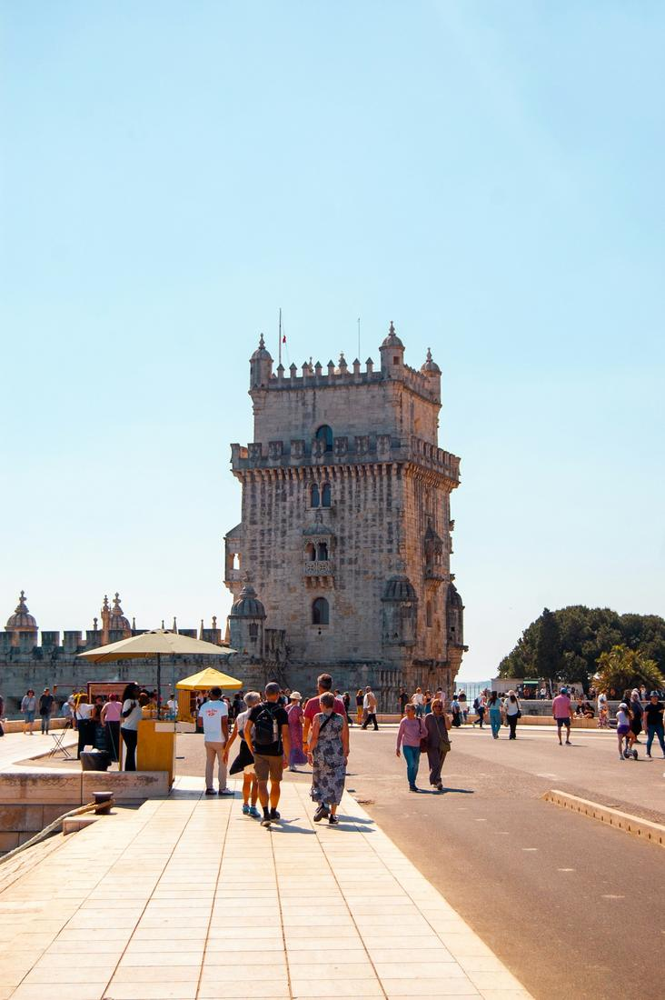

Where fairytale palaces, terraced wine country, and coastal charm make Portugal a hidden gem.
Portugal is the trip I recommend to clients who want everything Western Europe offers, history, wine, coastline, and incredible food, without the crowds of its more famous neighbors. Between the fairytale palaces of Sintra, the terraced vineyards of the Douro Valley, and the sun-faded charm of Lisbon's oldest neighborhoods, this is a country that rewards slow, curious travel. I have booked this for wine-loving couples, multi-generational families, and clients who simply wanted to see something different from the usual Europe itinerary, and it never fails to become a favorite trip.
What I love about building a Portugal itinerary is how much variety sits so close together. Sintra hands you colorful, almost storybook palaces tucked into misty hills just outside Lisbon. The Douro Valley, a couple hours from Porto, gives you some of the oldest demarcated wine country on earth, all terraced hillsides and river views. And Lisbon itself layers centuries of maritime history with some of the best food in Europe, from fresh custard tarts to fado-filled evenings in its oldest quarters. It all adds up to a trip that feels genuinely undiscovered.
As your travel advisor, I love pulling these pieces together into an itinerary that flows exactly the way you want to experience Portugal, whether that means palaces, wine country, or historic neighborhoods. Here are three excursions I love arranging for clients heading to Portugal, each built around real, well-loved experiences worth planning your trip around.

This is the day I build for nearly every client passing through Lisbon, because Sintra genuinely looks like nowhere else in Europe. The centerpiece is Pena Palace, a wildly colorful Romanticist palace in shades of yellow and red perched on a hilltop above town, its towers and terraces framed by the misty forest of Sintra's hills. From there, many clients also want to add Quinta da Regaleira, a Gothic estate famous for its mysterious spiral Initiation Well that descends underground through moss-covered stone. Once we leave the palaces behind, the day continues west to Cabo da Roca, the dramatic clifftop point marking the westernmost edge of mainland Europe, where the Atlantic stretches out endlessly below. We usually close the loop in Cascais, a relaxed seaside town of sailboats, cobblestone streets, and beachfront cafes, perfect for a late lunch before heading back to Lisbon. This combination of storybook palaces, dramatic coastline, and a charming seaside town is exactly why Sintra is the excursion I hear clients talk about most once they are home, and it is one of my favorite days to plan.

This is the excursion I build for clients who want to see one of the most beautiful wine regions on earth, and honestly, most people are shocked at how little-known the Douro Valley still is outside Portugal. The drive out from Porto alone is worth it, as the road winds past terraced vineyard hillsides that have been cultivated for wine, mostly the Port wine Portugal is famous for, since Roman times. Once in the valley, the day typically includes a visit to a family-run quinta, or wine estate, for a proper tasting alongside a Portuguese lunch overlooking the vines. The centerpiece for most clients, though, is the river cruise along the Douro itself, gliding past terraced slopes that rise almost vertically from the water, small riverside villages, and the occasional historic quinta with its name painted right into the hillside. Depending on the season, we can time this around the September and October harvest, when the valley is at its most alive. It is a slower, wine-soaked kind of day, and one I especially love arranging for couples and small groups who want to see a side of Portugal that still feels wonderfully undiscovered.

This is the day I build for clients who want to taste and walk their way through Lisbon's history, and it always becomes one of the trip's favorite days. We start in Belem, the riverside district where Portugal's Age of Discovery ships once set sail, visiting the intricately carved Belem Tower and the vast Jeronimos Monastery before stopping at the neighborhood's original pastel de nata bakery for the custard tart that started it all, still warm and dusted with cinnamon. From there, we head into Alfama, Lisbon's oldest neighborhood, a maze of steep cobblestone streets, tiled facades, and hidden viewpoints that survived the 1755 earthquake mostly untouched. This is where I love arranging a small-group food tour, working through Portuguese classics like grilled sardines, cured meats, cheese, and local wine at a handful of family-run spots tucked into the neighborhood's alleys. Depending on the evening, we can add a fado performance, the mournful, beautiful traditional music born in these very streets, for dinner. It is a day that moves from monuments to markets to music, and it is exactly the kind of layered, local experience that makes Lisbon so special.
Prefer to plan together? I'll build your custom package. Already know what you want? Book instantly through my travel portal.